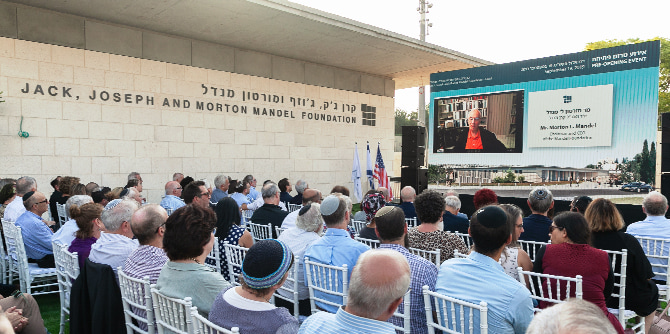

בטקס חגיגי, בנוכחות
נשיא הקרן,
פרופ' יהודה ריינהרץ,
סגן יו"ר הקרן סטיב הופמן,
ראש עיריית ירושלים משה לאון,
מנכ"ל הסוכנות היהודית יצחק (בוז'י) הרצוג ומנכ"ל קרן מנדל-ישראל משה ויגדור, ציינה קרן מנדל את הכניסה לשלב האחרון של הקמת הבניין ואת יום הולדתו ה-98 של יו"ר הקרן,
מר מורטון מנדל.
"מה שאנו רואים כאן הוא הוא התגשמות של חזון – חזונם של מייסדי הקרן. כאן יפעל בית ספר מנדל למנהיגות חינוכית, ולצדו יפעל מכון מנדל למנהיגות, על שלל תוכניות המנהיגות הרבות שלו. הבית הזה יהיה ביתם של כלל בוגרי תוכניות מנדל הרבות", אמר פרופ' יהודה ריינהרץ, ותיאר את עקרונות התכנון של הבניין, כפי שהתווה אותם מר מנדל – בראשם הרצון לאפשר ריבוי של מפגשים טבעיים בין אנשי הסגל, המרצים, העמיתים והבוגרים.
מורטון מנדל, יו"ר קרן מנדל, צפה בטקס בשידור וידאו חי מביתו בפלורידה ובירך את הנוכחים בהתרגשות רבה: "אני מאמין שהבניין הזה יהיה לנצח מקור של הנאה – לעבוד בו, להשתתף בפגישות בו... לשבת כאן ולראות את זה, גם אם איני נוכח באופן פיזי, זה יותר מאשר חלום שמתגשם. זה אות של כבוד לאנשים שגדלתי עמם, לאבי ולאמי... אמי הייתה גאה בזה מאוד", אמר בדמעות, רגע לפני שקהל הנוכחים בירך אותו בשירת "יום הולדת שמח".
"הבניין פה יהיה אחד החשובים בעיר מבחינת חשיבות הפעילות שתתקיים בו. אנחנו כאן בירושלים אסירי תודה לקרן ולעומדים בראשה על תרומתה רבת השנים בשדות החינוך, המנהיגות, החברה והרוח של ירושלים", אמר ראש עיריית ירושלים משה לאון.
החנוכה הרשמית של בניין קרן ג'ק, ג'וזף ומורטון מנדל מתוכננת לחודש מאי 2020.
{kind=link}